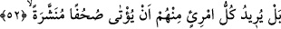

52. Daha doğrusu onlardan her biri, kendisine, (önünde) açılmış sahifeler (ilâhî
vahiy) verilmesini istiyor.
Bu cümle ifâdenin akışının gerekli kıldığı mukadder bir cümle üzerine atfedilmiştir.
Burada sanki şöyle denmektedir: Onlar inad ve kibirlerinden dolayı bu öğütle yetinmez
ve râzı olmazlar. Aksine onların herbiri kendi önlerine açılmış ve okunan sahifeler
verilmesini ister. Onların bu istekte bulunmalarının sebebi şuydu: Ebû Cehil b. Hişam,
Abdullah b. Ümeyye ve arkadaşları Peygamber (s.a.) Efendimiz’e: “Bizlerden her
birimize gökten bir kitap getirmedikçe ya da âlemlerin rabbinden filanoğlu filancaya
başlığı ile başlayan, içinde sana uymamızı emreden yâni: “Ey filanca! Muhammed’e uy
o benim katımdan sana gönderilen elçidir” yazısı yazılan açılmış kağıtlar getirmedikçe
senin ardından asla gitmeyeceğiz” dediler. Tıpkı: “Bize okuyacağımız bir kitap
indirmediğin sürece (göğe) çıktığına da asla inanmayız.” (el-İsra, 17/93) dedikleri
gibi.
Âyette yer alan “imriun” Kamus’un ifâdesine göre insan ya da erkek demektir.
“Müneşşera”, “suhuf” kelimesinin sıfatıdır. Suhuf ise kitap anlamında olan sahîfe’nin
çoğuludur.
Tâcu’l-masâdır’da ifâde olunduğuna göre “müneşşera” kelimesi çokluk ifâde etmesi
için şeddeli kılındı.
53. Hayır! Aslında onlar âhiretten korkmuyorlar.
“Hayır!” Bu ifâde onların önceki âyette belirtilen: “önlerine açılmış sahifeler”
verilmesi isteklerini red anlamı taşımaktadır. Çünkü onlar bunu hidâyete erip doğru yolu
bulmak için değil, inad ve kibirlerinden istemişlerdir.
“Aslında onlar âhiretten korkmuyorlar.” Çünkü dünya sevgisine dalıp gitmişlerdir.
Onlar -kendilerine istedikleri gibi sahîfeler verilmediği için değil- âhiretten
korkmadıkları için öğütten yüz çeviriyorlar.
54. Asla (düşündükleri gibi değil)! Bilsinler ki bu, gerçekten bir îkazdır!
“Hayır! Hayır!” Bu ifâde ise onların öğütten yüz çevirmelerini reddir. “O” zikr veya
Kur’an “bir öğüttür.” Yâni nasîhattir. “Tezkire” kelimesindeki tenvin, tâzim ifâde eder.